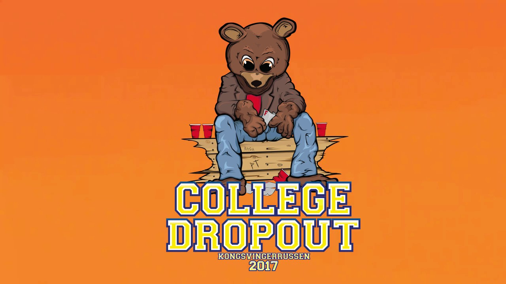
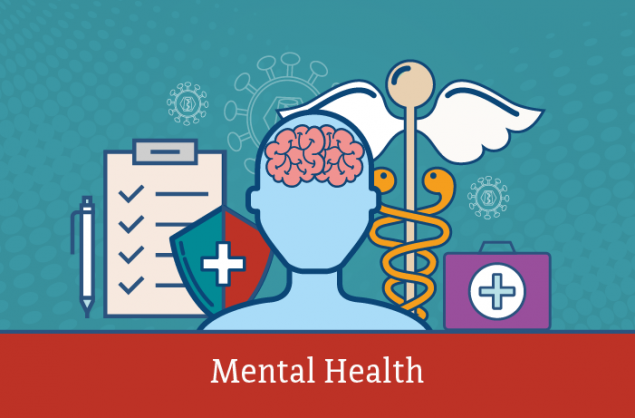

Why it's okay to be a college drop out
September 29, 2020 by Karlisha Samuels

You may be reading this wondering if it's okay to take that Leave of Absence or to stop going to University/College. I am here to tell you that it is completely okay to not want to go further. Please note that I am not encouraging you to drop out; but in the name of mantal health and opportunities it is okay. Do not worry about wasting your parent's money or even if you took a loan. If you think that taking a break from school is the best thing for you then I am all for it. Just ensure you have a contingency plan because some places you may end up in leave, you may need that paper.
Once you have made your decision, just know that someone out there supports you. But puss and dog naave the same luck so ensure that you at least have a plan. Are you going to get a job? Are you going to start a business? How will you survive? These are the questions you need to start asking yourself. Okay, I have taken a step, what next? How next? where next? Good luck on all your endeavours
Mental Wellness
September 30, 2020, by Amish Galda

As a great person once said, "Life doesn't get easier, you just learn how to handle it". And I must say, this is one of the truest things I have ever heard. As life goes by, life gets harder but it all boils down to how you deal with the lemons that life throws at you. Will you take them and squeeze them into your eyes? Or will you create the best lemon pepper wings anyone has ever tasted. I can't promise you a good life, but I can promise you that the outlook you have on life does change how good your life is.
Sometimes it is okay to be sad and buss a bad man tears. Especially my gents who are taught that you have to be strong all the time. Crying is good for the soul. Allow yourself to feel your emotions because only then will you be allowed to truly heal yourselves. Come to one with your trouble by first accepting them. Then you will acknowledge how the pain made you feel and you will make it through it. Cut yourself some slack and walk good.